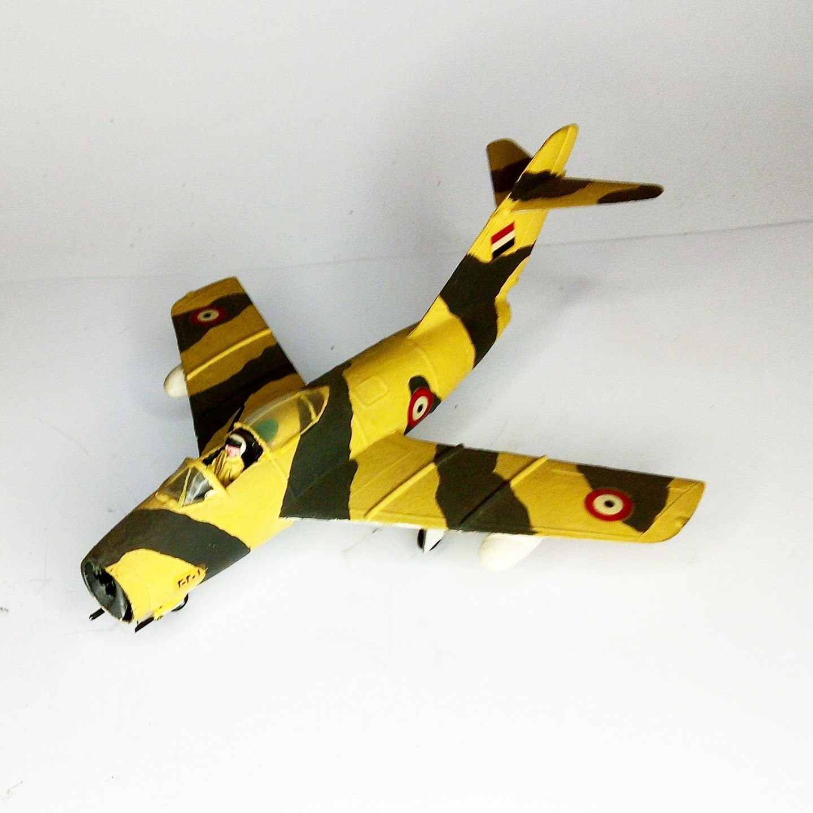

Aerei · scale model archive
MiG 15 bis
MiG 15 bis — Kit: Airfix, Scale: 1/72. Lybian livery, trying to avoid the natural metal finish which was not satisfactory using the enamels available at…

Photo gallery
English description
Lybian livery, trying to avoid the natural metal finish which was not satisfactory using the enamels available at that time
#1/72 #Airfix
Descrizione italiana
Lybian livrea, trying per evitare il metallo naturale finitura which fu not satisfactory using il enamels available una quell’epoca.